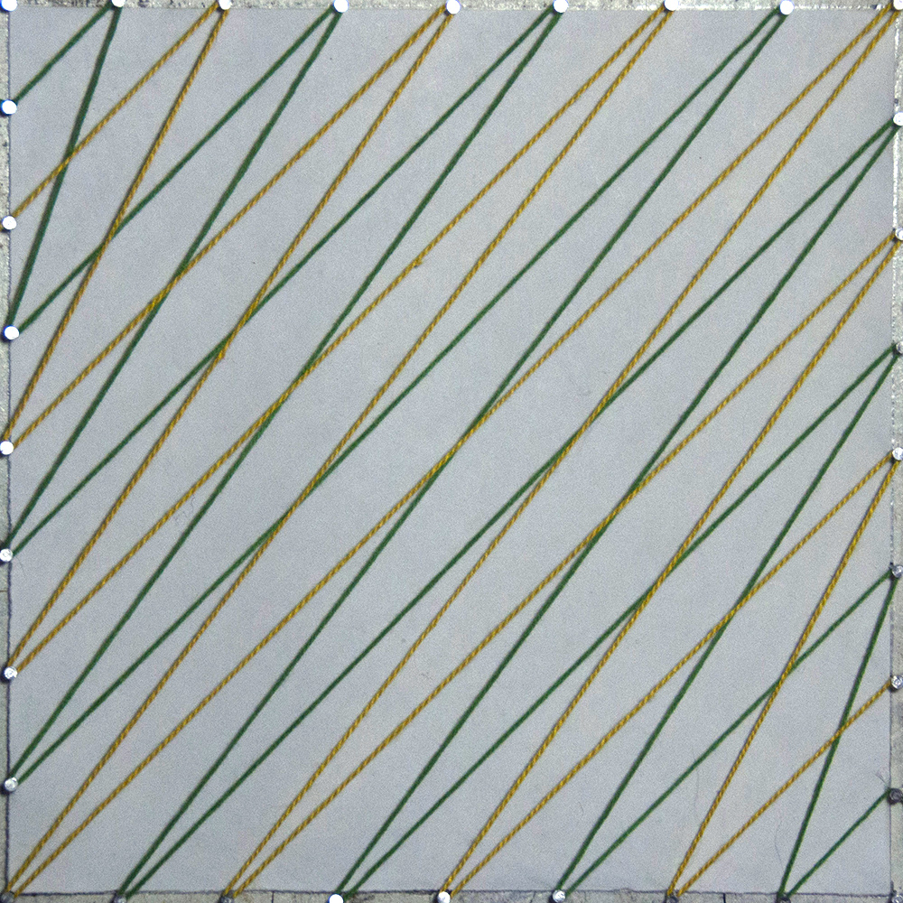
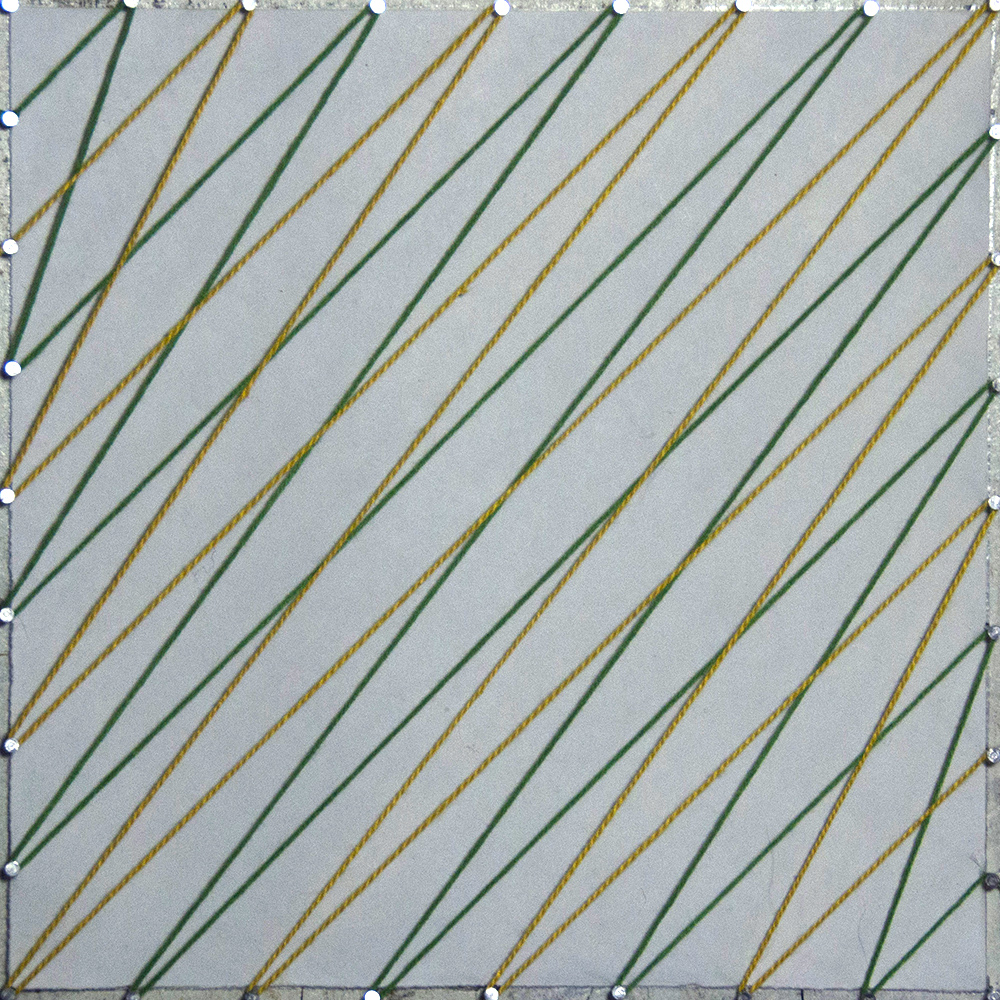
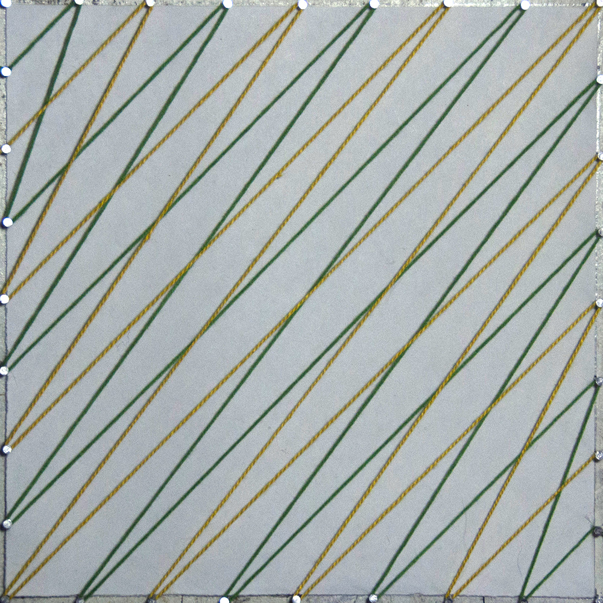
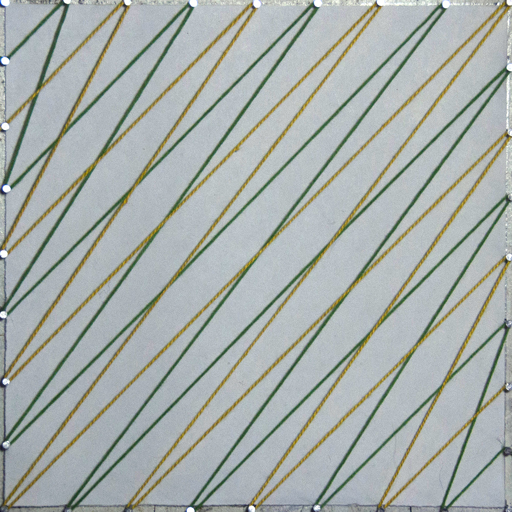
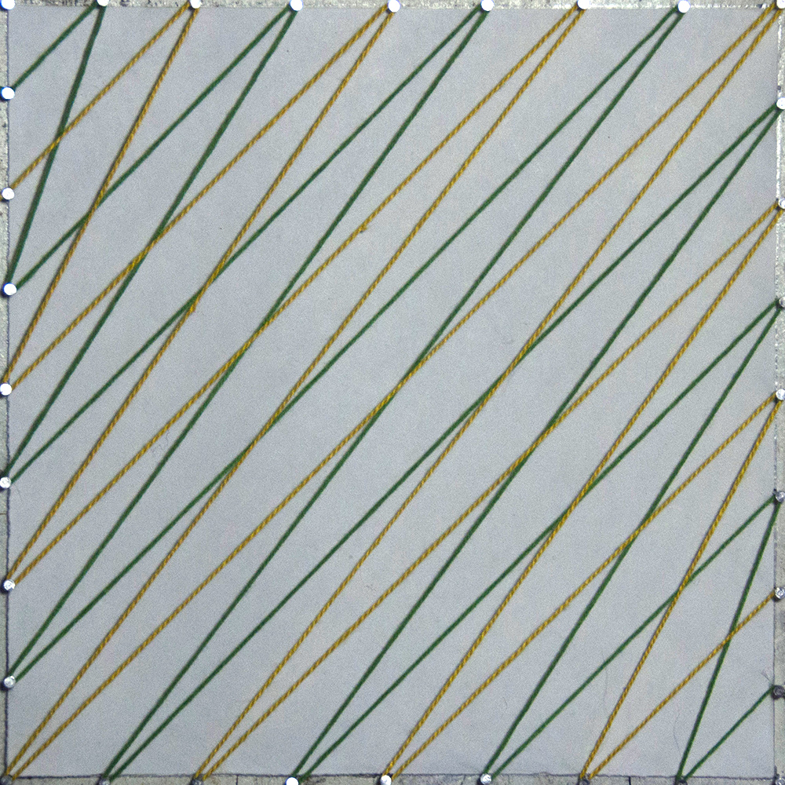

niklas peters
menu
photography
photography
mono
how do freedom feel?
music
projects
projects
desert designs
gifs
yarn
about
yarn designs, 2015
scrap wood, 32 nails, and a $1 bag of yarn became a daily meditation

© Niklas Peters, 2016.


 


